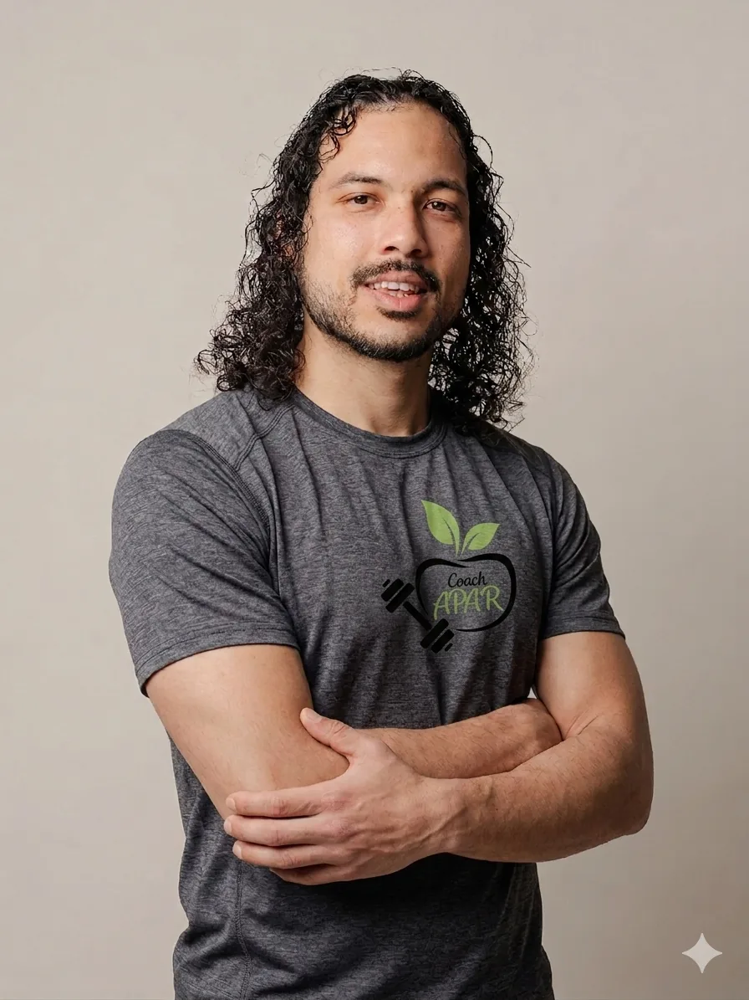

Votre coach sportif
et enseignant en APA à Montpellier
Coaching personnalisé, activité physique adaptée et Pilates en individuel.
Je vous aide à bouger plus et mieux, à votre rythme. J'accompagne aussi les personnes qui vivent avec une maladie chronique ou un handicap, en complément de leur suivi médical.

Bouger avec une maladie,
ça s'accompagne
Je suis Loïc, coach sportif et enseignant en activité physique adaptée à Montpellier, titulaire d'un Master STAPS Activité physique adaptée et santé (APAS) de l'Université de La Réunion (bac+5), et titulaire de la carte professionnelle d'éducateur sportif (n° 03422ED0421). Je suis aussi formé à la préparation physique et j'ai suivi une formation sur les bases de l'alimentation. Mon métier : aider les personnes qui vivent avec une maladie chronique, un handicap ou les effets de l'âge à reprendre une activité physique régulière, adaptée et suivie. Je ne suis pas médecin : je travaille en complément de votre suivi médical, en lien avec votre médecin si vous le souhaitez.
Un accompagnement sur mesure
Des programmes adaptés à votre profil, à vos objectifs et aux consignes de votre médecin
Activité physique adaptée
Mon cœur de métier : accompagner par l'activité physique les personnes qui vivent avec une maladie chronique ou un handicap, les seniors, et celles qui reprennent après une opération, à Montpellier.
- Séances fondées sur les recommandations scientifiques
- En lien avec votre médecin et votre kiné
- Programmes progressifs et personnalisés
- Adaptées à votre état de santé
Coaching sportif individuel
Programmes personnalisés pour atteindre vos objectifs : perte de poids, prise de muscle, remise en forme ou reprise du sport, à Montpellier.
- Séances d'1 h personnalisées
- Évaluation de la posture et du mouvement
- Échanges entre les séances
- Ajustements réguliers
Alimentation et activité physique
Des repères alimentaires concrets pour accompagner votre activité physique, adaptés à vos objectifs et à vos goûts. Si vous suivez un traitement ou un régime prescrit, je travaille en complément de votre médecin ou de votre diététicien.
- Point sur vos habitudes alimentaires
- Repères et idées de menus
- Recettes adaptées
- Suivi et ajustements
Pilates
Renforcement des muscles profonds et travail de la posture, pour un dos plus solide au quotidien. Le Pilates est possible en séances individuelles, sur demande. Des cours collectifs pourront ouvrir s'il y a assez de personnes intéressées : signalez-vous avec le formulaire.
- Formation Pilates niveau I (CAP'Formations Sport, 2023)
- Séances individuelles sur demande
- Cours collectifs selon les demandes
- Travail de la posture
Activité physique et maladies chroniques
Je construis des séances qui tiennent compte de votre maladie, de votre traitement et de vos limites, en complément de votre suivi médical.
Maladies cardiovasculaires
Hypertension, insuffisance cardiaque, après un infarctus : une reprise progressive, avec l'accord de votre cardiologue.
Diabète de type 1 et 2
Des séances adaptées à votre traitement et à votre surveillance glycémique, en lien avec votre médecin.
Troubles musculo-squelettiques
Arthrose, mal de dos chronique, tendinites, fibromyalgie : un renforcement adapté, sans forcer sur la douleur, en lien avec votre médecin ou votre kiné.
Obésité et surpoids
Une reprise progressive et bienveillante, pour retrouver le plaisir de bouger et installer des habitudes qui durent.
Handicap moteur
Des séances construites autour de vos capacités et de vos objectifs.
Seniors et prévention des chutes
Maintien de l'autonomie, équilibre et renforcement musculaire.
Ce que je vous apporte
Mon expertise : faire bouger, en confiance, les personnes que la maladie, le handicap ou l'âge ont éloignées du sport.
4 étapes pour reprendre et progresser
Une méthode simple, que j'adapte à chaque personne
Premier rendez-vous
Un bilan initial (votre parcours, vos habitudes, les consignes de votre médecin), un bilan de condition physique, la définition de vos objectifs, puis ma proposition d'accompagnement.
- Bilan initial et bilan de condition physique
- Définition des objectifs
- Proposition d'accompagnement : nombre de séances et contenu
Programme sur mesure
Un programme d'activité physique adapté à votre profil, à votre état de santé, à vos objectifs et à votre rythme de vie, avec des repères alimentaires si vous le souhaitez.
- Programmation individualisée
- Repères alimentaires
- Progression maîtrisée
Accompagnement actif
Séances régulières en présentiel avec corrections techniques, et des échanges entre les séances pour garder le cap.
- Séances personnalisées
- Corrections posturales
- Motivation entretenue
Suivi et progrès mesurés
Des bilans réguliers pour mesurer vos progrès et ajuster votre programme dans la durée.
- Bilans mensuels
- Ajustements continus
- Progrès mesurés
Demandez votre premier échange
Premier rendez-vous offert et sans engagement : bilan, objectifs et proposition d'accompagnement. Prise de contact par téléphone.
Du lundi au vendredi, 17 h 30 – 20 h 30 (dernier créneau à 20 h 30)
Vous préférez me contacter directement ?
Tarifs et forfaits
Des formules adaptées à tous les besoins et budgets
Premier échange
Par téléphone
- Vos objectifs et vos disponibilités
- Les formules possibles
- Sans engagement
Forfait 20 séances
Coaching sportif
- 20 séances de coaching
- Échanges entre les séances
- Objectifs suivis et mesurés
Montpellier & alentours (Hérault 34) · Devis personnalisé sur demande
Vos questions, mes réponses
L'activité physique adaptée (APA) consiste à adapter l'activité physique aux capacités de chaque personne : maladie chronique, handicap, avancée en âge, reprise après une blessure. Elle peut être prescrite par votre médecin. Je suis enseignant en APA, titulaire d'un Master STAPS Activité physique adaptée et santé (APAS) : j'évalue vos capacités, je construis des séances à votre mesure et je suis vos progrès, en complément de votre suivi médical.
Ma formation universitaire (Master APAS, Université de La Réunion) porte sur l'adaptation de l'activité physique aux maladies chroniques, au handicap et à l'avancée en âge. Concrètement : j'évalue vos capacités, je tiens compte des consignes de votre médecin, j'ajuste chaque séance et je mesure vos progrès. Je peux aussi échanger avec votre médecin ou votre kiné, avec votre accord.
Oui, c'est le cœur de mon métier. J'accompagne des personnes qui vivent avec un diabète, une maladie cardiovasculaire, une obésité, de l'arthrose ou un handicap moteur. Je ne remplace pas votre médecin : je construis l'activité physique avec ses consignes, et je reste en lien avec lui si vous le souhaitez.
Une séance de coaching individuel est à partir de 50€. Le tarif exact dépend de la formule choisie, un devis personnalisé est établi sur demande. Les tarifs de l'accompagnement alimentaire sont détaillés sur la page Alimentation et activité physique. Le premier échange est offert, sans engagement.
Je suis disponible du lundi au vendredi, 17 h 30 – 20 h 30 (dernier créneau à 20 h 30). Le premier contact se fait par téléphone, au 07 65 77 51 04. Vous pouvez aussi m'écrire à coachapar@gmail.com ou proposer un créneau avec le calendrier de demande de rendez-vous : je vous rappelle pour le confirmer.
Les séances se déroulent à Montpellier et alentours (Hérault). Je peux me déplacer à votre domicile, en salle de sport, ou en extérieur selon vos préférences et vos besoins. Le lieu est discuté lors du premier contact pour trouver la solution la plus adaptée.
Faites le premier pas
dès aujourd'hui
Premier rendez-vous offert · Sans engagement · Accompagnement sur mesure